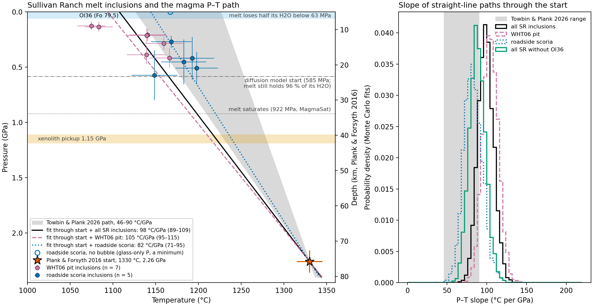
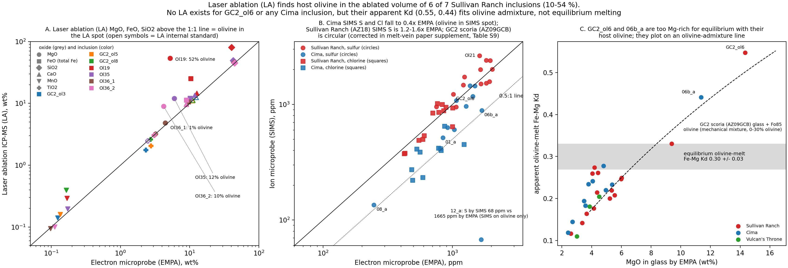
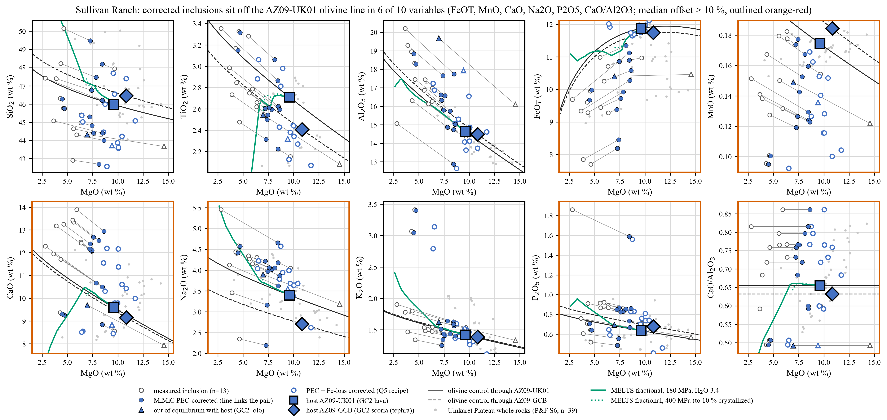

Appendix B — Melt-inclusion methods
This appendix holds the melt-inclusion method detail behind Chapter 6 and the starting melt of the ascent models: the three MiMiC versions and their error budget, the bubble equation of state, which MiMiC run sets the P–T path, the LA-ICP-MS and host checks, the olivine-overlap correction, GC2_ol4, and the CO2 basis of the start (CO2/Nb against CO2/Ba).
B.1 Three MiMiC versions
MiMiC (Rasmussen et al. 2020) corrects each inclusion for post-entrapment crystallization (PEC) and adds back the CO2 in the vapor bubble with a bubble-growth model. Three versions are compared:
- Original (as published), on the 2023 inputs. The MiMiC run behind the 2023 paper and Table 3 of the deposited chapter. The vendored code reproduces it exactly: a control run of the 2023 input file matches every point value (H2O, CO2, bubble-corrected CO2, entrapment pressure, glass pressure, Fo) to the 2-decimal rounding of the 2023 output (max |difference| 0.005).
- Original code on the 2026 inputs (
data/mimic_2026). The 2026 input file carries new EMPA compositions and the recalibrated NanoSIMS H2O and CO2 for the pit (AZ18-06) inclusions (for example Ol23 glass H2O 3.8 against 3.6 wt%). The roadside AZ09 inclusions and the Cima and Vulcan’s Throne inputs are unchanged, and so are their results. This is the base run: it sets the inclusion points on the P–T path. - Modified MiMiC, the production version for the inclusion tables (
data/mimic_2026_dz). Everything is as in version 2 except the CO2 molar volume at the two bubble sites. The published code uses a Redlich–Kwong volume of pure CO2 multiplied by the vapor CO2 mole fraction; the modified code uses the Duan & Zhang (2006) H2O–CO2 mixture volume at MiMiC’s own vapor composition.
The published construction has two errors that partly cancel. Its Redlich–Kwong CO2 volume is 6–8 % too small (against Span–Wagner), which gives too much CO2. Treating the CO2 mole fraction as a volume fraction ignores the H2O in the vapor, which gives too little CO2 for H2O-rich vapor. For SR (vapor CO2 mole fraction 0.35–0.52 in the key inclusions) the second error is larger, so the modified version adds bubble CO2. Table B.1 gives the values for the 12 SR inclusions used in the P–T path fits.
data/mimic_2026/summary.csv, data/mimic_2026_dz/summary.csv.
| Inclusion (locality) | H2O, wt% (v1 / v2 = v3) | Bubble-corrected CO2, ppm (v1 / v2 / v3) | Entrapment pressure, MPa (v1 / v2 / v3) | Entrapment T, °C (v1 / v2 / v3) |
|---|---|---|---|---|
| Ol23 (pit) | 3.36 / 3.55 | 5518 / 5352 / 5755 | 408 / 418 / 433 | 1168 / 1166 / 1167 |
| Ol21 (pit) | 3.30 / 3.47 | 4533 / 4414 / 4751 | 379 / 389 / 403 | 1141 / 1139 / 1140 |
| Ol19 (pit) | 2.89 / 3.05 | 3344 / 3246 / 3495 | 276 / 286 / 296 | 1161 / 1160 / 1160 |
| Ol35 (pit) | 2.73 / 2.88 | 1724 / 1683 / 1757 | 199 / 208 / 212 | 1142 / 1141 / 1141 |
| Olxx (pit) | 2.41 / 2.41 | 2374 / 2374 / 2417 | 215 / 215 / 218 | 1139 / 1139 / 1140 |
| Ol36_1 (pit) | 1.97 / 2.09 | 1208 / 1132 / 1162 | 137 / 136 / 138 | 1086 / 1084 / 1084 |
| Ol36_2, second EMPA (pit) | 1.97 / 2.04 | 3839 / 1090 / 1110 | 304 / 132 / 134 | 1078 / 1065 / 1066 |
| GC2_ol3 (roadside) | 2.24 / 2.24 | 6185 / 6185 / 6191 | 574 / 574 / 574 | 1148 / 1148 / 1148 |
| GC2_ol5 (roadside) | 2.80 / 2.80 | 3332 / 3332 / 3825 | 271 / 271 / 291 | 1168 / 1168 / 1169 |
| GC2_ol7 (roadside) | 2.70 / 2.70 | 8529 / 8529 / 9079 | 510 / 510 / 531 | 1198 / 1198 / 1199 |
| GC2_ol8 (roadside) | 1.96 / 1.96 | 5779 / 5779 / 5781 | 453 / 453 / 453 | 1183 / 1183 / 1183 |
| Ol11, corrected (roadside) | 2.40 / 2.40 | 3836 / 3836 / 3821 | 420 / 420 / 419 | 1193 / 1193 / 1193 |
Across whole eruptions the median change in bubble-corrected CO2 from v2 to v3 is +3.4 % for SR (13 inclusions with a bubble), −0.9 % for Vulcan’s Throne and −1.1 % for Cima. The maximum-H2O inclusion (Ol23) and the maximum bubble-CO2 inclusion (GC2_ol7) are the same in every version.
The H2O–CO2 pattern of the three volcanoes does not change with the version (Chapter 6). Across 39 inclusions the Duan & Zhang correction changes bubble-corrected CO2 by −2.8 to +14.8 %, and 34 stay within ±5 %.
B.2 Monte Carlo uncertainty and error budget
MiMiC reports the unperturbed draw as the value and the standard deviation of the perturbed draws (after a modified-z filter) as 1σ. For the four normal key inclusions the reported value is within 2.4 % (bubble CO2) and 6.3 % (entrapment pressure) of the Monte Carlo median, and the 1σ agrees with the 16–84 % half-width to within 11 %. The distributions are right-skewed: for Ol23 in the original code, entrapment pressure is 418 MPa with a 95 % range of 307–643 MPa, and bubble CO2 is 5352 ppm with a 95 % range of 2795–9633 ppm. In the modified version Ol23 is 5755 ± 2822 ppm and 433 ± 107 MPa; the H2O 1σ (0.36–0.37 wt%) is at least 93 % analytical error.
data/mimic_methods_2026/tables/budget_n300.csv.
| Inclusion | Quantity | 1σ | CO2 closure T spread (±17.5 %) | MgO diffusivity spread (±10 %) | Major-element errors (5 %) | H2O and CO2 errors |
|---|---|---|---|---|---|---|
| Ol23 | Bubble-corrected CO2 | 2088 ppm | 23 | 23 | 19 | 9 |
| Ol23 | Entrapment pressure | 88 MPa | 17 | 3 | 43 | 27 |
| GC2_ol7 | Bubble-corrected CO2 | 2341 ppm | 24 | 25 | 14 | 11 |
| GC2_ol7 | Entrapment pressure | 135 MPa | 11 | 2 | 60 | 1 |
Table B.2 shows that the bubble-CO2 1σ (27–39 % of the value) is mostly model spread, not measurement. The pressure 1σ is mostly the 5 % major-element error, which is large for EMPA SiO2; with 1 % errors the Ol23 pressure 1σ falls from 88 to 69 MPa and GC2_ol7’s from 135 to 85 MPa. Real EMPA errors for these glasses are not in the sources [CHECK: EMPA errors of the inclusion glasses].
Other candidate changes were measured but not adopted:
- Fe-loss correction (initial FeO blank in every input, so not applied): with each vent’s whole-rock FeO it lowers H2O by 3.0–6.5 % (Ol23 3.55 to 3.34 wt%) and raises bubble CO2 by 4.7–8.8 % and entrapment T by 20–53 °C. The recommended SR initial FeO is 11.6–11.9 wt% from the GC2 olivine control line.
- Fe–Mg Kd model (Ford 1983 instead of Toplis 2005): H2O −2.5 % (Ol23) to −4.8 % (GC2_ol7), bubble CO2 up to +14 %.
- Fe3+/FeT for SR (blank, so fixed at 0.2): 0.167 changes Ol23 H2O by −1.3 % and bubble CO2 by +2.7 %.
- Solubility model inside MiMiC: total CO2 of the key inclusions moves −12 to +17 %, more than the bubble equation of state does.
- Temperature ±30 °C, cooling rate and inclusion size: ≤ 3 % on any key value.
- A pure-CO2 bubble (an upper bound, not a best estimate) would add +55 % (Ol23) and +42 % (GC2_ol7).
B.3 Bubble equation of state
Nine bubble-fluid models were compared on all 40 inclusions (scripts/bubble_eos/): published Redlich–Kwong; Span–Wagner CO2; ideal mixing with IAPWS-95 H2O; modified Redlich–Kwong and Duan & Zhang (2006) H2O–CO2 mixtures; and fixed CO2 mole fractions 0.8, 0.9 and 1. Duan & Zhang at the equilibrium vapor composition was adopted, with the modified Redlich–Kwong result (2–5 % more CO2 for H2O-rich vapor) as the spread. The vapor composition still comes from VolatileCalc with ideal mixing. Raman CO2 densities of the bubbles would test the choice. The observed-volume CO2 is not used where the measured bubble exceeds 3 times MiMiC’s modeled shrinkage bubble (co-entrapped vapor); only Ol23 (3.4 against 2.08 vol%) passes.
B.4 Which MiMiC run sets the P–T path
The P–T path keeps the base MiMiC (version 2, as published); the inclusion tables use the production run (version 3) (Table B.3, Figure B.1). The modified run was checked on the path by rerunning the inclusion fit (scripts/pt_path_inclusions.py) on both outputs; the base run reproduces results/pt_path/slopes.csv byte for byte.
| Quantity | Base MiMiC (v2) | Modified MiMiC (v3) |
|---|---|---|
| Inclusion pressures (Pvbg) | as published | +0 to +7.6 % (largest GC2_ol5, 271 to 291 MPa; GC2_ol7 +4.2 %; pit +1 to +4 %) |
| Entrapment temperature | as published | up to +1.2 °C |
| Slope through the start and all 12 SR inclusions (°C/GPa) | 98.5 (68 %: 89.1–108.5) | 98.3 (88.9–108.4) |
| Slope, pit inclusions only | 104.6 | 104.1 |
| Slope, roadside inclusions only | 82.2 | 82.1 |
By locality, the fit through the inclusions gives 105 °C/GPa (68 %: 95–115) for the pit and 82 °C/GPa (71–95) for the roadside scoria; without the two Ol36 analyses it gives 88 °C/GPa (79–98). At the same pressure the roadside inclusions are hotter (1148–1198 °C) than the pit inclusions (1139–1166 °C), but the two localities overlap within error.

B.5 Does the MiMiC version change the rates?
Table B.4 answers this for the decompression rates. Each row uses the same fitting code and K strategies; only the starting melt of the degassing path changes (MagmaSat, closed system, isothermal 1200 °C).
results/decompression/mimic_compare/posteriors.csv.
| Starting melt of the degassing path (H2O wt% / CO2 ppm) | MiMiC version | Olivine Ol-2, K = 9 | WHT1 exterior opx, opx-anchored K | WHT1 exterior cpx, opx-anchored K |
|---|---|---|---|---|
| Each fit’s own 2023 path | Original, 2023 inputs | 0.146 (0.110–0.199) | 0.266 (0.134–0.523) | 0.720 (0.276–1.83) |
| 2023 recipe, 3.36 / 8,529 | Original, 2023 inputs | 0.141 (0.107–0.190) | 0.268 (0.135–0.527) | 0.725 (0.278–1.85) |
| 2026 recipe, 3.549 / 8,529 (primary MiMiC start) | Original, 2026 inputs | 0.143 (0.108–0.193) | 0.256 (0.128–0.508) | 0.703 (0.268–1.80) |
| Same, H2O −1σ / +1σ (3.178 / 3.920) | Original, 2026 inputs | 0.147 / 0.140 | 0.276 / 0.234 | 0.736 / 0.664 |
| Same, CO2 −1σ / +1σ (6,038 / 11,020) | Original, 2026 inputs | 0.137 / 0.148 | 0.241 / 0.271 | 0.661 / 0.746 |
| 2026 recipe, 3.55 / 9,079 | Modified (Duan & Zhang), 2026 inputs | 0.144 (0.109–0.195) | 0.260 (0.130–0.513) | 0.713 (0.272–1.82) |
| CO2/Nb start SR-1 (second scenario), 3.59 / 14,100 | Independent of version | 0.155 (0.117–0.211) | 0.287 (0.144–0.565) | 0.792 (0.302–2.02) |
| Mixture batch, 2.72 / 14,100 | Independent of version | 0.174 (0.129–0.244) | 0.342 (0.177–0.653) | 0.914 (0.353–2.31) |
- Code version, same inputs (rows 3 and 6): olivine +0.9 % (0.143 to 0.144), opx +1.4 % (0.256 to 0.260), cpx +1.4 % (0.703 to 0.713). The modified code raises the starting CO2 (8,529 to 9,079 ppm), which shifts the saturation pressure of the recipe start by +3.9 % (6783 to 7049 bar with the 2023 H2O), but this hardly reaches the rate, because H2O loss happens below about 60 MPa.
- Inputs, same code (rows 2 and 3): olivine +1.4 %, opx −4.4 % (0.268 to 0.256), cpx −3.1 % (0.725 to 0.703). The recalibrated pit H2O matters more than the bubble equation of state.
- Monte Carlo 1σ of the original code (rows 4 and 5): olivine 0.137–0.148, opx 0.234–0.276, cpx 0.661–0.746, several times wider than the version effect.
- Starting-melt choice (rows 6–8): moving from the as-trapped recipe to the CO2/Nb start SR-1 raises the olivine rate by 8 % (0.144 to 0.155), and the mixture batch by 21 % (0.174). This choice, not the MiMiC version, is the inclusion input that matters.
Why the headline rate does not depend on the version. The primary rate on the P–T path starts from the published MiMiC melt (3.549 wt% H2O, 8,529 ppm CO2), the row “2026 recipe, 3.549 / 8,529” of Table B.4, so the version question applies to it directly: the modified code changes the rate by 1.4 % or less. The second scenario, SR-1, has H2O (3.59 wt%) equal to Ol23’s H2O (3.55 wt%, identical in the two code versions) plus a 0.04 wt% back-calculated loss to CO2-rich vapor before trapping; its CO2 (14,100 ppm) is CO2/Nb 239 times the lava Nb, not a MiMiC value. The vapor-loss term was computed with the modified bubble CO2 and not rerun with the original code [CHECK: vapor-loss term with the original code].
Three things are robust to the choice: every inclusion H2O value (and so the H2O–Cl batch structure and the maximum-H2O inclusion), the identity of the highest-CO2 inclusion (GC2_ol7) with the conclusion that every inclusion trapped a CO2-degassed melt, and the decompression rates (≤ 1.4 %). The 2026 inputs (recalibrated pit NanoSIMS volatiles, corrected Ol36_2 CO2) differ from the 2023 ones, and those changes move the inclusion values more than the code does.
B.6 Starting melt: alternatives
The primary ascent start is the published MiMiC melt as trapped. The second scenario, SR-1, adds two corrections to the measured inclusions: the H2O that a CO2-rich bubble removed before trapping, and the CO2 from CO2/Nb. Table B.5 gives the starts with and without each correction.
| Start | H2O (wt%) | CO2 (ppm) | What it assumes | Ol-2 rate, isothermal (MPa/s) |
|---|---|---|---|---|
| Published MiMiC (used) | 3.549 | 8,529 | Ol23’s PEC-corrected H2O with the CO2 of GC2_ol7, as trapped, partly degassed | 0.143 (0.108–0.193) |
| SR-1, CO2/Nb (second scenario) | 3.59 | 14,100 | Ol23’s PEC-corrected H2O plus the H2O lost to its bubble before trapping; CO2 from CO2/Nb 239 times Nb 59 ppm | 0.155 (0.12–0.21) |
| MiMiC without bubble H2O | 3.55 | 14,100 | Ol23 as corrected by MiMiC, no H2O returned from the bubble | below the effect of any other choice (0.04 wt% difference) |
| As trapped, modified MiMiC (SR-3) | 3.55 | 9,079 | Ol23 H2O with the highest bubble-reconstructed CO2 (GC2_ol7) from the modified code | 0.144 |
| 2023 start | 3.36 | 8,529 | Published MiMiC on the 2023 inputs | 0.141 |
The 2023 starting melt was the GC2 lava AZ09-UK01 (Plank & Forsyth 2016, Table S5) at Fe3+/FeT ≈ 0.17, with 3.360 wt% H2O and 8,529 ppm CO2 (the 2023 Ol23 H2O and the GC2_ol7 bubble CO2); MagmaSat reproduces the first rows of both 2023 paths to within 2.3 ppm CO2. The 2026 recalibration, in the same recipe, raises the saturation pressure by only 38 bar (0.6 %), because saturation near 680 MPa is CO2-dominated.
B.7 CO2 of the start: CO2/Nb or CO2/Ba
The tables show the published MiMiC CO2 first, as the primary start, and the CO2/Nb correction as the second scenario. Bubble-reconstructed CO2 (modified MiMiC) reaches 9,079 ppm (GC2_ol7), and the SR inclusions saturate at 129–574 MPa (Pvbg), shallower than xenolith pickup (1.15 GPa).
The CO2/Nb estimate. Undegassed CO2 is CO2/Nb times Nb. With the depleted-mantle ratio 239 (Saal et al. 2002) and the lava’s Nb (59 ppm), CO2 is 14,100 ppm, the start of the second scenario. The ocean-island-basalt ratio, 505 ± 168 (Rosenthal et al. 2015), doubles it (29,800 ppm). Sources: data/la_sims_2026/endmember_co2.csv, scripts/endmember_co2.py.
- Every inclusion sits below the undegassed CO2 at either ratio. On the basis of each inclusion’s own LA-ICP-MS Nb and CO2/Nb 239, the trapped melts had already lost 46–91 % of their CO2 (retained 9–54 %), but at most 0.21 wt% H2O. On the lava-Nb basis the best inclusion (9,079 ppm) has lost 36 % of 14,100 ppm. This appendix quotes the per-inclusion basis unless it says otherwise.
- With each inclusion’s own Nb and CO2/Nb 239, the undegassed CO2 is 11,400–20,500 ppm and the undegassed saturation pressure (Iacono-Marziano) 670–900 MPa, against 190–450 MPa as measured.
- CO2/Ba was tried and rejected: it gives 3–7 times more CO2, because the SR Ba/Nb (11.5–16.5) is far above that of the reference pairs.
- The rate depends on it by about 10 %. The as-trapped MiMiC start (8,529 ppm) gives 0.143 against 0.155 MPa/s (isothermal) for CO2/Nb 239, and the joint fit 0.100 against 0.112 on the path, since CO2 sets where degassing starts and the H loss happens below about 60 MPa.
- It matters for the depth story. With CO2/Nb 239 the start saturates at 922 MPa (MagmaSat; the MiMiC start 682 MPa), close to xenolith pickup; with 505 it saturates at 1.44 GPa, deeper than pickup.
Open questions for co-authors are whether 239 or 505 is the right reference for an enriched alkaline basalt, whether a per-inclusion Nb is better than the lava Nb, and whether the correction is worth making at all (Chapter 11).
B.8 LA-ICP-MS against SIMS
LA-ICP-MS traces exist for 7 SR inclusions (GC2_ol3, ol5, ol8, Ol19, Ol35, Ol36_1, Ol36_2), and none for GC2_ol6, GC2_ol7, Ol11, Ol23, Ol21, Olxx or any Cima or Vulcan’s Throne inclusion. Figure B.2 summarizes the cross-checks.

data/la_sims_2026/.
- Olivine in the laser spot. LA finds host olivine in the ablated volume of 6 of 7 inclusions (1–54 %; Ol19 52 %). Incompatible traces are unaffected to about 2 %; the LA calibration itself is good to about ±10–25 %.
- SIMS against EMPA S and Cl. For the pit inclusions (NanoSIMS) SIMS S is 1.22–1.64 times EMPA, except Ol36_2 (0.89), and Cl is 0.88–1.33 times. For the roadside GC2 inclusions the comparison is circular, because their SIMS values were corrected with EMPA S, Cl and P (Section B.9). For Cima, SIMS S is 0.53–1.06 times and Cl 0.37–0.77 times EMPA, consistent with SIMS spots that hit olivine.
- GC2_ol6 and Cima 06b_a are olivine-admixed analyses. Their apparent Kd (0.547 and 0.441) is far above equilibrium (0.30 ± 0.03). Melting of the measured Fo 85–86 wall cannot do that; a mechanical mix of glass and host olivine can. MiMiC’s 11–18 % post-entrapment “melting” for these two removes an artifact, so GC2_ol6 is excluded. Cima 06b_a (equilibrium Fo 88.9 against host Fo 85.9, so MiMiC removes olivine and scales the volatiles up) and Cima 12_a (no host Fo in the input, so its temperatures and PEC are not meaningful) stay in the inclusion tables, flagged, with these reasons.
- Trace ratios. CO2/Nb (21–130 with the Duan & Zhang bubble) is 0.05–0.58 times the depleted-mantle 239, so CO2 was degassed before trapping and no bubble correction over-corrects. F/Nd (19.4–24.2 in four inclusions, against about 21 for oceanic basalts) independently confirms SIMS F.
- H2O/Ce. H2O varies less than Ce (log-log slope 0.23), but Cl and S fall off against Ce almost as much, so at most about 20 % of the H2O decoupling looks like H loss, and 3.55 wt% is not clearly a minimum.
- A supplement table error. In all six AZ18 rows of the melt-vein supplement table S9, the MiMiC oxide columns belong to other inclusions (reversed order); the H2O and bubble-CO2 columns are correct. It needs fixing before publication.
B.9 The olivine-overlap correction (GC2 and Vulcan’s Throne)
The SIMS volatiles of the roadside AZ09-GCB inclusions and of Vulcan’s Throne in the deposited tables are not raw. They carry the Plank-lab correction for SIMS overlap with host olivine, which scales each analysis using S, P and Cl; it is not the post-entrapment crystallization correction. Evidence: the 2023 overlap-corrected source table is titled “these have been corrected for overlap with olivine, using S, P and Cl”, with the raw EMPA SO2, P2O5 and Cl beside the corrected SIMS values, and the same values appear in the melt-vein supplement. Two Vulcan’s Throne inclusions marked “hit ol” (no EMPA) are uncorrected, but their Cl is scaled by 1.239 like every row, so Cl was also recalibrated. The MiMiC PEC correction was tested and ruled out (7–16 %, two negative, unrelated). The exact per-inclusion factor could not be reproduced from the EMPA and SIMS ratios (mean, geometric mean, least squares), so the formula is the Plank lab’s [CHECK: ask Terry Plank whether the supplement must state the formula]. No value changed; footnotes mark the affected rows.
B.10 GC2_ol4 has no measured volatiles
The 2023 overlap-corrected source table lists EMPA for GC2_ol4 mi 02 but no SIMS volatiles, and Plank & Forsyth (2016) has no row for it. The 2023 MiMiC input gives GC2_ol4 S 1530, Cl 500, H2O 2.39 and CO2 3136, which are GC2_ol3’s values exactly, copied across in 2023. The deposited Table 3 row for GC2_ol4 (H2O 2.16 wt%, CO2 2840 ppm after PEC) is therefore GC2_ol3’s volatiles on GC2_ol4’s composition. The later melt-vein input leaves them blank, correctly. GC2_ol4 stays out of the inclusion tables, and the 2023 edition of the supplement keeps the deposited row with a footnote.
B.11 Host candidates and the lava-versus-inclusion liquid line
The degassing paths use the AZ09-UK01 lava as the starting composition. The checks ask whether a better host exists and whether the lava is the parent of the trapped melts (Figure B.3).

- AZ09-UK01 is the best SR host candidate. Among the Plank & Forsyth (2016) magmas it scores best in every variant (combined score 4.97 against 7.02 for the AZ09-GCB scoria; 4.77 against 6.96 with the Fe-loss set). No alternative improves on the 2023 choice.
- The lava is a liquid but not the parent of the trapped melts. It is in equilibrium with Fo 85.3, the median GC2 olivine, with no sign of accumulated olivine or mantle debris. No sensible crystallization of up to four phases, and no forward MELTS path, links it to the inclusions within 2σ on every oxide: the inclusions are higher in CaO/Al2O3 and P2O5 (by about 20 %) and lower in TiO2, ratios that olivine cannot change.
- Fe loss explains most of the apparent gap. With the recommended initial FeO (11.59–11.73 wt% on the scoria olivine control line; Ol23 11.69, GC2_ol7 11.62), the main inclusion mean comes within 2σ of the lava in 7 of 10 oxides.
- Effect on the start. For the 2026 recipe, AZ09-UK01 saturates at 6815–6824 bar; moving it along olivine control to the inclusion mean changes this by −0.4 to +2.2 %, and AZ09-GCB would add 11.6–17.3 %.
B.12 Roadside rims and the final melt
The olivine rims differ by locality. The pit phenocryst rims converge on Fo 83.3–85.8 (median 84.5), at equilibrium with the AZ09-UK01 lava whatever their core. The roadside grains end 1–4 Fo lower: Ol-2 at 80.7, ol6 at 81.5–82.6 and ol23 at 83.0. Table B.6 gives the melts these rims need.
| Whole rock | MgO (wt%) | Equilibrium olivine Fo | Olivine removed to reach rim Fo 83 to 80.7 | Melt MgO (wt%) | Melt MgO/FeOT |
|---|---|---|---|---|---|
| AZ09-UK01 lava | 9.6 | 84.1–85.2 | 2–4 % to 6–8 % | 8.8–6.7 | 0.74–0.58 |
| AZ09-GCB roadside scoria | 10.8 | 85.8–86.8 | 6–8 % to 10–11 % | 8.6–6.6 | 0.74–0.58 |
B.13 Methods and code
MiMiC runs. MiMiC (Rasmussen et al. 2020), upstream commit 346a3dd, is vendored unchanged in scripts/mimic/vendor/. Settings: vb_cor = 1, fe_fixed = 0, fe_cor = 1, kd_model = 0 (Toplis 2005), H2O_diff = 0; 1000 Monte Carlo draws; numpy seed 1. Point values are the unperturbed first draw and do not depend on the seed. The SR Fe3+/FeT is blank in the input, so MiMiC uses a fixed 0.2 without resampling; Cima (0.17) and Vulcan’s Throne (0.23) are given and resampled. Cima and Vulcan’s Throne have no measured uncertainties, so their errors were assumed from the median SR relative errors (data/mimic_2026/assumed_relative_errors.csv). A shift of the last error columns in the SR input file was tested by realigning them: point values are identical and 1σ changes by ≤ 12 %.
- Control. The 2023 input (42 rows) run through the vendored code with the 2023 settings reproduces the 2023 output and Table 3 to max |difference| 0.005.
- Speed.
scripts/mimic/run_mimic.py run --fast --jit --workers 12is 46 times faster (SR, 1000 draws: 24 s); with the original global seed it is byte-identical to the original code. - Modified version.
scripts/bubble_eos/run_production.pypatches a generated copy of the driver (never the vendored file) at the two bubble CO2 sites. With the patch off, the output is bit-identical to version 2 at 1 and 1000 draws. Each output carries a.run.jsonwith the settings, seed, equation of state and file hashes. - Error budget.
scripts/mimic_methods/methods.pyswitches off one perturbation source at a time with aligned random streams (300 paired draws). - PEC and Fe loss. MiMiC adds or removes equilibrium olivine until the melt is in Fe–Mg equilibrium with the measured host Fo. The production runs apply no Fe-loss correction. Two code issues were found and left unchanged in the vendored file: the Fe–Mg exchange step uses a factor 2.298 where a 1:1 molar exchange needs 1.7825, and the resampled initial FeO is never used in the Monte Carlo.
- LA-ICP-MS versus SIMS.
scripts/la_sims/reads the melt-vein supplement workbook; olivine in the LA spot is estimated with a two-component mixing model in which the internal-standard oxide sits in the glass only. The test suite has 16 passing tests. - Rates by MiMiC version.
scripts/decompression/fit_mimic_compare.pyreuses the fitting code and K strategies and changes only the degassing path (310 posterior rows). - Original volatiles and host checks.
scripts/original_volatiles/(VESIcal 1.2.12; MagmaSat in the ENKI ThermoEngine container, with a control reproducing the cached 6814.82 bar),scripts/starting_melt/(matching the 2023 path onsets across 399 candidates),scripts/host_candidates/andscripts/lld/(least-squares mass balance; rhyolite-MELTS 1.2.0 with MnO removed from the bulk, which restores Fe–Mg olivine in this ThermoEngine build). The working logs are indexed in Appendix E.